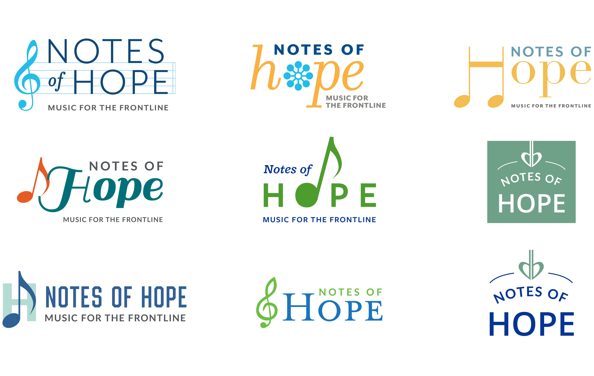
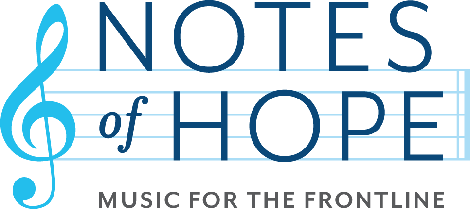

A visual identity for music in a difficult moment
In the spring of 2020, a Boston-based nonprofit of classical musicians began streaming daily performances to thank frontline workers. Artists including Yo-Yo Ma donated their time to perform, and audiences tuned in from remote locations around the world. The project was meaningful and immediate — but it had no visual identity to match.
They needed a logo that could communicate hope and gratitude under pressure: legible at small sizes, warm enough to carry the emotional weight of the moment, and flexible enough to work across livestreams, social media, and digital promotions. All of it during a pandemic.
This was a close collaboration — both with our studio and with the client. We developed multiple directions together and brought them to the client as a conversation, each concept reflecting a different interpretation of what "notes of hope" could mean visually. My direction was the one that stuck, and I took it through to the final mark.
Presenting several directions early made it easier for the client to articulate what resonated and what didn't.

The finished logo balances warmth with legibility. A treble clef anchors the mark with an immediate musical reference, while the typography and color palette carry the emotional tone: uplifting, accessible, and calm. The system was built to hold up at any size and across every digital surface the team needed.

Notes of Hope launched with a clear, recognizable identity that carried their mission into every performance they promoted. The branding appeared in the closing credits of their recordings, with a special thanks to our studio.
Video production by Tanner Gwaltney Productions
"Notes of Hope is so grateful to all of the amazing and talented artists who have donated their time and gifts to help us 'play-it-forward' to Boston's healthcare heroes."— Notes of Hope
Bringing the client into the process early, rather than presenting a finished solution, built trust and led to a stronger outcome. When people can see their own values reflected back at them, they know it when they see it.
Designing for a project rooted in something real — gratitude, loss, community — made every decision feel more deliberate. When the purpose is clear, it's easier to know what the design needs to do and what it doesn't.